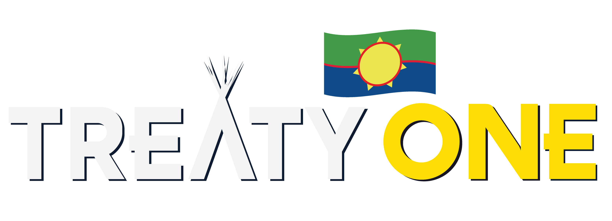

This website is about Treaty one and information on where it is located, what it is, what happened then and what is happening now, who did what, more information about the agreement and what makes this treaty different and what I think makes it special.
Treaty 1, the first of the numbered treaties, it was signed at Lower Fort Garry in Manitoba Canada. Communities on Treaty 1 territory include Winnipeg, Portage la Prairie, Selkirk, Steinbach, Emerson, and Winkler, while the First Nations communities on Treaty 1 are Brokenhead, Long Plain, Peguis, Roseau River, Sagkeeng, Sandy Bay, and Swan Lake.